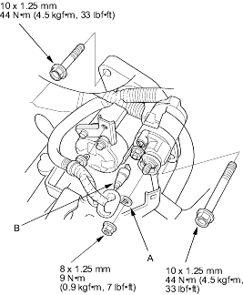
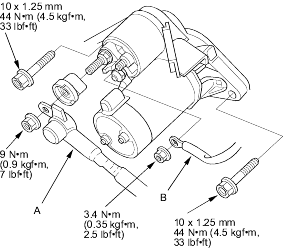

- Make sure you have the anti-theft code for the radio, then write down the frequencies for the radio's preset buttons.
- Disconnect the battery negative cable, then disconnect the positive cable and wait at least 3 minutes.
- Remove the resonator.
- Disconnect the starter cable (A) from the B terminal on the solenoid, then disconnect the BLK/WHT wire (B) from the S terminal.
Except D16V1 (KG, KR, KS models) engine with M/T

D16V1 (KG, KR, KS models) engine with M/T

- Remove the two bolts holding the starter, then remove the starter.
- Install in the reverse order of removal. Make sure the crimped side of the ring terminal (A) is facing out.
- Connect the battery positive cable and negative cable to the battery.
- Enter the anti-theft code for the radio, then enter the customer's radio station presets.